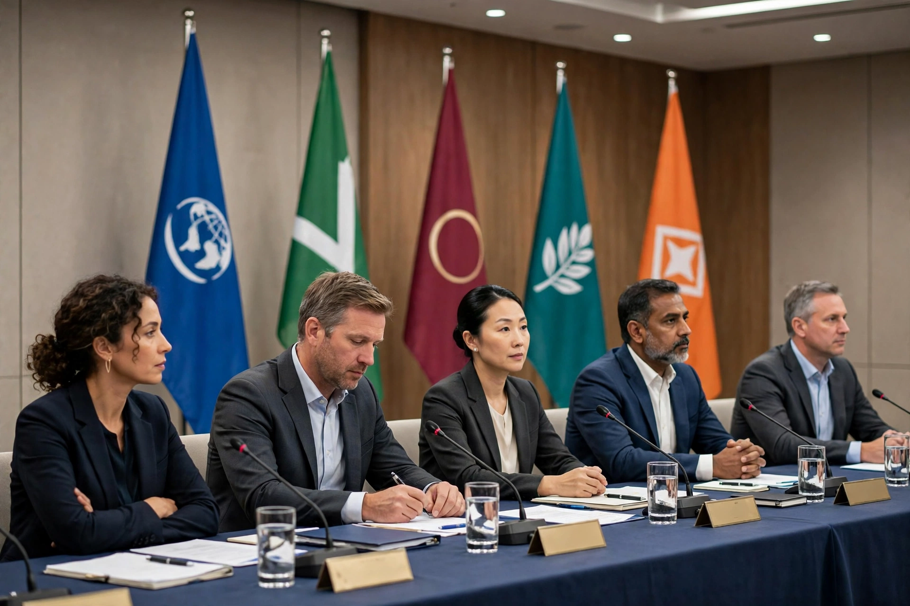

Top stories
World leaders meet as major international stories develop

The BBC's homepage leads with continuing coverage of the biggest international stories of the day, with live pages, analysis from correspondents and explainers — summarised here in general terms, as the exact lead story changes hour by hour.
Ukraine war: latest updates
Live and background coverage of the war in Ukraine.
Middle East latest
Reporting from the region, with analysis of diplomacy and humanitarian conditions.
Sport: football, cricket, F1 and more
Match reports, live text commentary and results.
Climate and science news
Stories on climate summits, space missions and health research.